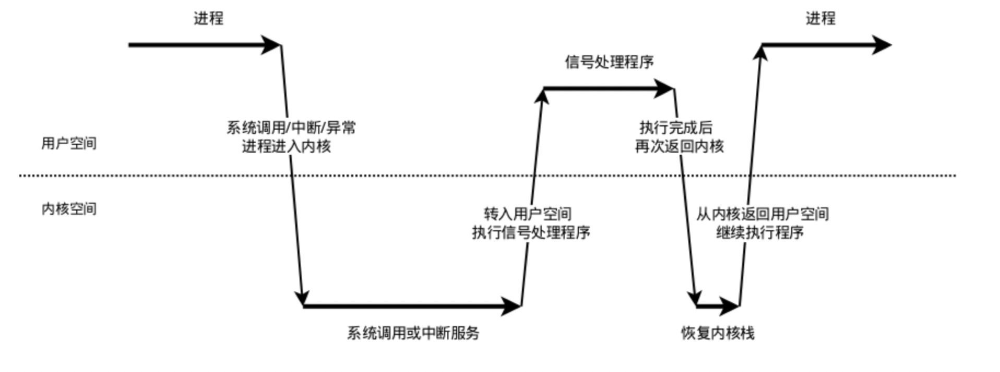

崩溃优化
Android 崩溃分析
Android 崩溃基本分为 Java 崩溃和 Native 崩溃
简单来说，Java 崩溃就是在 Java 代码中，出现了未捕获异常，导致程序异常退出。
那 Native 崩溃又是怎么产生的呢？一般都是因为在 Native 代码中访问非法地址，也可能是地址对齐出现了问题，或者发生了程序主动 abort，
这些都会产生相应的 signal 信号，导致程序异常退出。
Native 崩溃
- 在 Unix-like 系统中，所有的崩溃都是编程错误或者硬件错误相关的，系统遇到不可恢复的错误时会触发崩溃机制让程序退出，如除零、段地址错误等。
- 异常发生时，CPU 通过异常中断的方式，触发异常处理流程。不同的处理器，有不同的异常中断类型和中断处理方式。
- linux 把这些中断处理，统一为信号量，可以注册信号量向量进行处理。
- 信号机制是进程之间相互传递消息的一种方法，信号全称为软中断信号。
信号机制

(1) 信号的接收
接收信号的任务是由内核代理的，当内核接收到信号后，会将其放到对应进程的信号队列中，同时向进程发送一个中断，使其陷入内核态 。
！！！注意，此时信号还只是在队列中，对进程来说暂时是不知道有信号到来的。
(2) 信号的检测
进程陷入内核态后，有两种场景会对信号进行检测：
1.进程从内核态返回到用户态前进行信号检测
2.进程在内核态中，从睡眠状态被唤醒的时候进行信号检测
当发现有新信号时，便会进入下一步，信号的处理。
(3) 信号的处理
信号处理函数是运行在用户态的，调用处理函数前，内核会将当前内核栈的内容备份拷贝到用户栈上，并且修改指令寄存器（eip）将其指向信号处理函数。
接下来进程返回到用户态中，执行相应的信号处理函数。
信号处理函数执行完成后，还需要返回内核态，检查是否还有其它信号未处理。如果所有信号都处理完成，就会将内核栈恢复（从用户栈的备份拷贝回来），同时恢复指令寄存器（eip）将其指向中断前的运行位置，最后回到用户态继续执行进程。
至此，一个完整的信号处理流程便结束了，如果同时有多个信号到达，上面的处理流程会在第2步和第3步骤间重复进行。
四、捕捉native crash
1.注册信号处理函数
第一步就是要用信号处理函数捕获到native crash(SIGSEGV, SIGBUS等)。在posix系统，可以用sigaction()：
1 | #include <signal.h> |
signum：代表信号编码，可以是除SIGKILL及SIGSTOP外的任何一个特定有效的信号，如果为这两个信号定义自己的处理函数，将导致信号安装错误。
act：指向结构体sigaction的一个实例的指针，该实例指定了对特定信号的处理，如果设置为空，进程会执行默认处理。
oldact：和参数act类似，只不过保存的是原来对相应信号的处理，也可设置为NULL。
1 | struct sigaction sa_old; |
2.设置额外栈空间
1 | #include <signal.h> |
SIGSEGV很有可能是栈溢出引起的，如果在默认的栈上运行很有可能会破坏程序运行的现场，无法获取到正确的上下文。而且当栈满了（太多次递归，栈上太多对象），系统会在同一个已经满了的栈上调用SIGSEGV的信号处理函数，又再一次引起同样的信号。
我们应该开辟一块新的空间作为运行信号处理函数的栈。可以使用sigaltstack在任意线程注册一个可选的栈，保留一下在紧急情况下使用的空间。（系统会在危险情况下把栈指针指向这个地方，使得可以在一个新的栈上运行信号处理函数）
1 | stack_t stack; |
3.兼容其他signal处理
1 |
|
某些信号可能在之前已经被安装过信号处理函数，而sigaction一个信号量只能注册一个处理函数，这意味着我们的处理函数会覆盖其他人的处理信号
保存旧的处理函数，在处理完我们的信号处理函数后，在重新运行老的处理函数就能完成兼容。